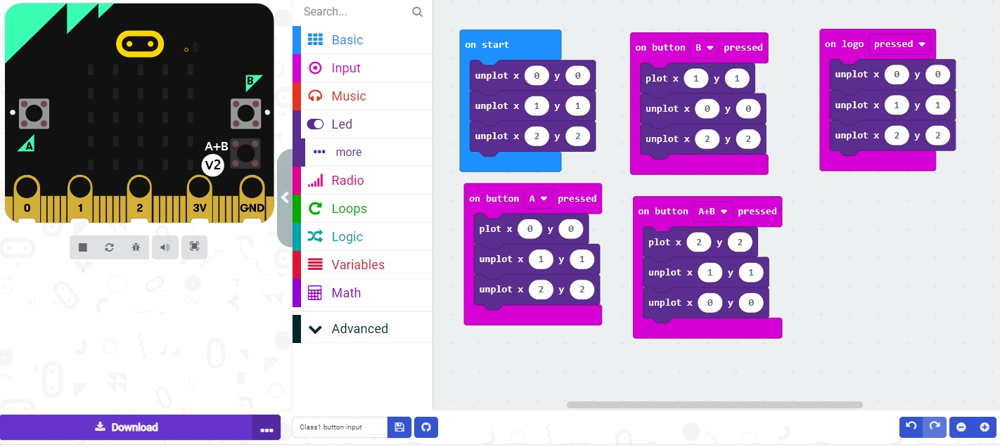

LEDS
The microbit comes with an array of leds that you can use to draw simple characters
or display messages one character at a time
You can also test your code by exercising it in the virtual/simulated microbit
Create this code:

Then press buttons on the left and see the result